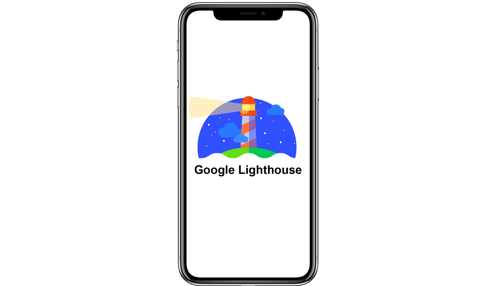

Rapports d'analyse

Pour Mobile
Pour Desktop
Il y a deux rapports d'analyse, un mobile et un desktop, vous pouvez choisir.
A noter : Le rapport pour mobile à été émis avec un CPU 4X plus lent que celui d'un ordinateur, ce qui explique la variation des scores.